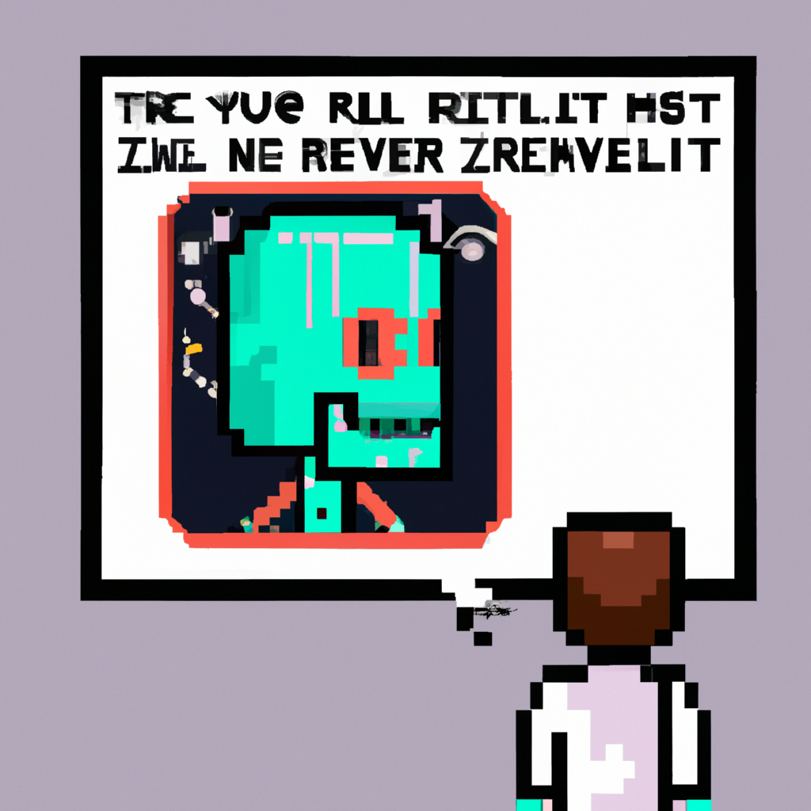

Why AI will never replace the radiologist
As a Python instructor teaching people machine learning, I am often asked if AI will ever be able to replace the radiologist. My answer is a resounding no. While AI certainly has the potential to help improve the accuracy of radiological diagnosis, it will never replace the radiologist entirely.
Radiology is a complex field that requires an experienced specialist to interpret the results of imaging tests. AI may be able to automate some parts of the process, but it still lacks the human intuition and experience to make the most accurate diagnosis.
AI can help radiologists by providing a second opinion, for example, by suggesting additional tests or by analyzing the results of existing tests. However, the radiologist is ultimately the one who must make the decision as to what the diagnosis is and what the next step should be.
AI can also help reduce the time radiologists spend on mundane tasks, such as sorting through images or transcribing reports. However, AI cannot replace the radiologist's experience and expertise.
AI is an incredibly powerful tool, but it should never be used to replace the radiologist. AI can help radiologists, but it cannot replace them altogether. The radiologist's experience and expertise is still invaluable, and can never be replaced by a machine.